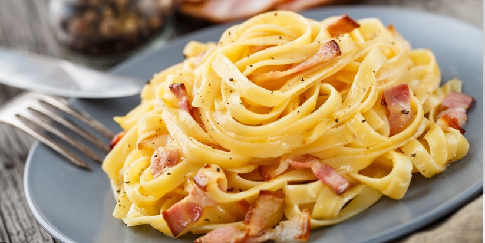

Macarrão à carbonara

Ingredientes
- bacon picado a gosto
- 3 ovos
- pimenta-do-reino a gosto
- creme de leite se quiser dar um toque diferente à receita
- queijo ralado a gosto
- sal
- macarrão de sua escolha (espaguete, fusili,etc.)
Modo de Preparo
- Frite bem o bacon, até ficar crocante (pode-se adicionar salame picado).
- Coloque o macarrão para cozinhar em água e sal.
- No refratário onde será servido o macarrão, bata bem os ovos com um garfo.
- Tempere com sal e pimenta a gosto, e junte o queijo ralado, também a gosto.
- Quando o macarrão estiver pronto, escorra e coloque (bem quente) sobre a mistura de ovos, misture bem.
- O calor da massa cozinha os ovos.
- Coloque o bacon, ainda quente, sobre o macarrão e sirva.